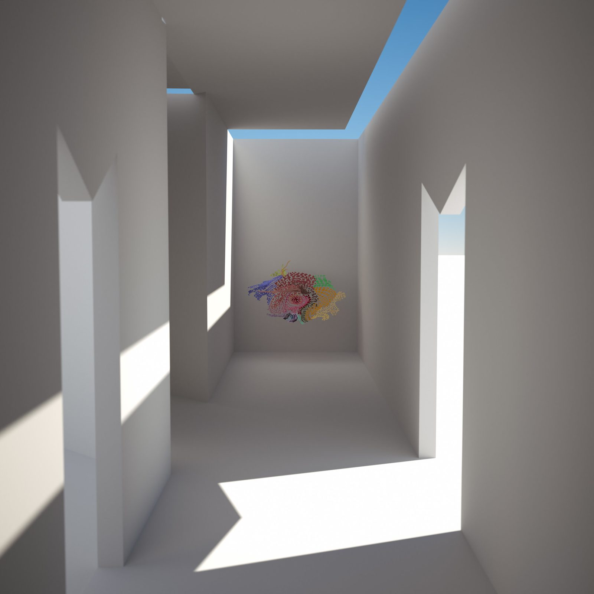
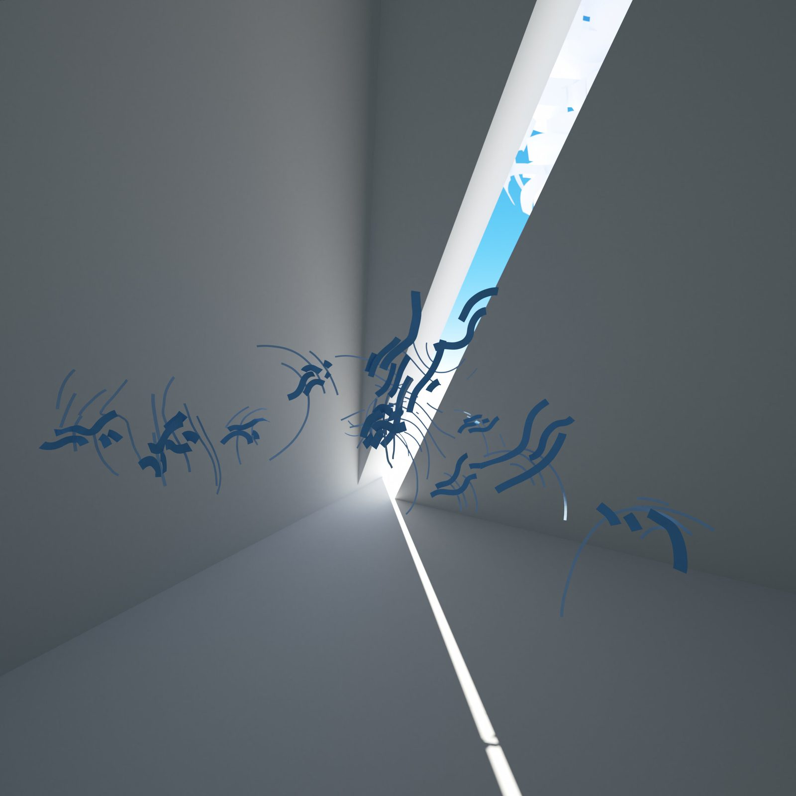
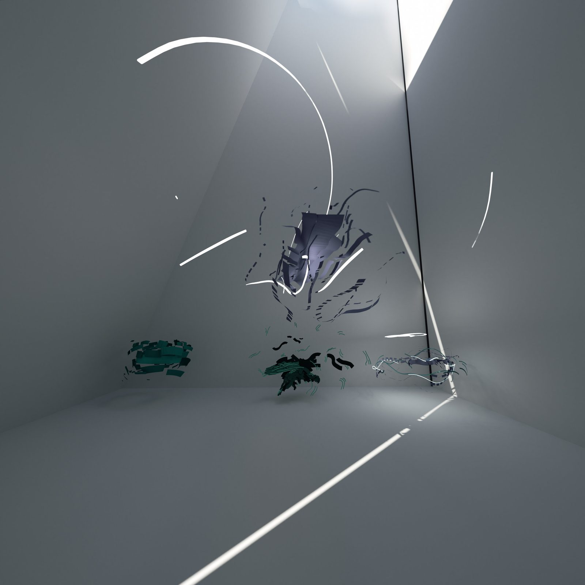
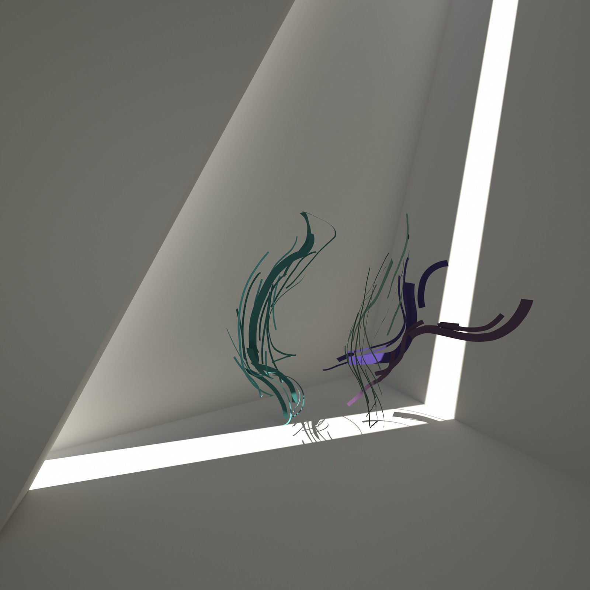
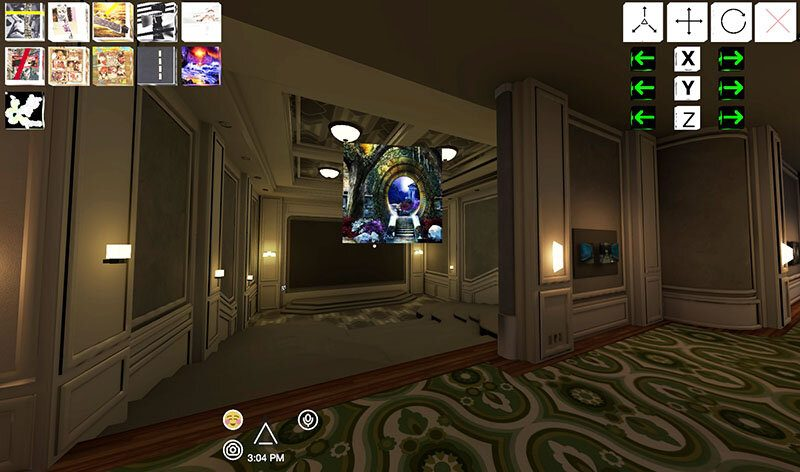
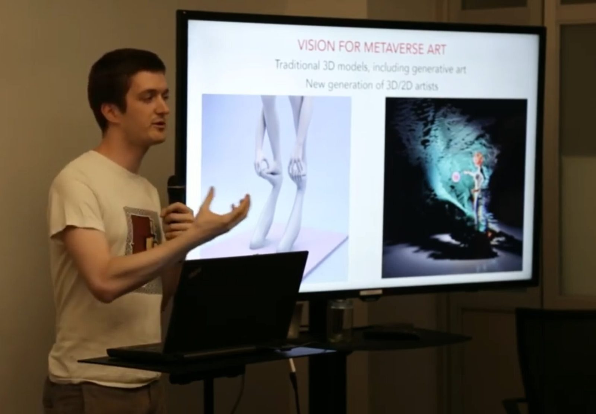
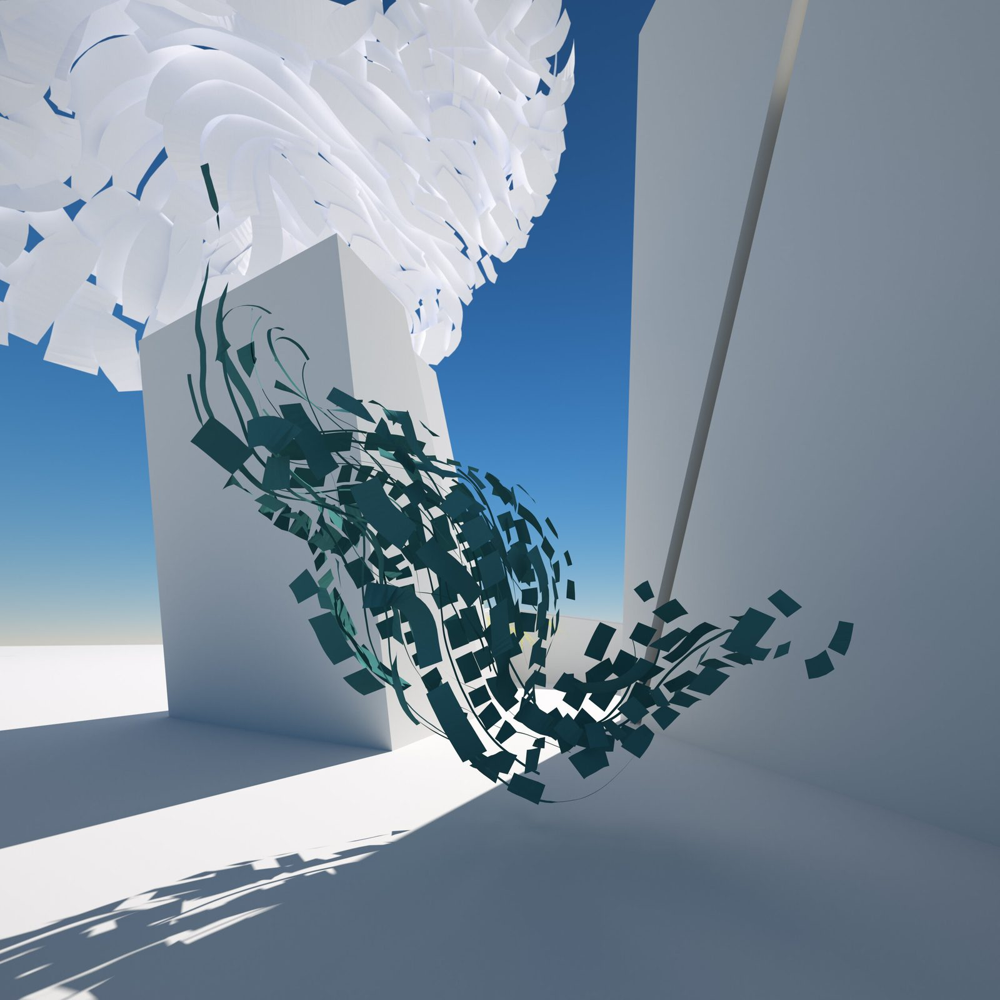

Born from a hackathon in New York City, CULTVRAL was one of the first platforms for spatially curating VR art shows, and the project that launched Samuel’s decade-long practice in virtual architecture.
In the summer of 2016, after graduating from university, Samuel moved to New York City for a position at an architectural VR software company. Almost immediately, he joined Art-A-Hack, a multi-week art hackathon that paired artists with technologists. The goal of the team’s project was to develop a platform enabling artists and galleries to spatially curate and manage VR art shows, with the long-term ambition of expanding to augmented reality once the hardware was ready.
Through the hackathon, the team created a proof-of-concept website to host and manage 3D models and a 3D interface in AltspaceVR that let them choose from uploaded models to place in the metaverse. After the hackathon, Samuel brought the project to AltspaceVR and continued developing it with a programmer, handling user interface, project management, gallery design, artist outreach, and organizing VR art shows.

The gallery was designed in Autodesk Revit and the VR art was sculpted using Tilt Brush. Even in this earliest project, the architectural impulse was clear: the gallery was a space designed to produce specific qualities of light and atmosphere.
White walls, rectangular skylights, and strip lighting created a minimalist architecture where daylight became the primary material, casting dramatic diagonal beams that shifted as the viewer moved through the space. Each corridor and room produced its own lighting condition, giving every artwork a unique spatial context.

During the last twenty-four hours before the platform closed, I stayed in the gallery as long as I could, hosting a slew of metaverse visitors who were gathering for the supposed final days of AltspaceVR.


After roughly one year of development, AltspaceVR announced that it would be abruptly shutting down. Coincidentally, Samuel was visiting his father in Gaspésie at the time. During the platform’s final twenty-four hours, he stayed in the gallery as long as he could, hosting waves of metaverse visitors who gathered in the virtual space for what they believed were its last days. That week was the first and final time the gallery was shown to a large online public.
AltspaceVR was eventually acquired by Microsoft and continued operating after some interruptions. But the experience of building and losing a virtual space crystallized something fundamental: the architecture of virtual worlds matters, and the communities that form within them are real. The loss of a digital space is felt as genuinely as the loss of a physical one.


CULTVRAL was the seed from which every subsequent project grew. The experience of designing VR galleries led directly to the Museum of Other Realities commission, where Samuel would design the architecture for one of the first permanent virtual art museums. The lighting obsession born in these white corridors, the conviction that architecture should serve light, would define every project that followed.
In 2020, additional VR art pieces were added to the environment and the lighting was recalculated, a quiet update to a space that, despite its early origins, still holds the architectural DNA of everything that followed.
